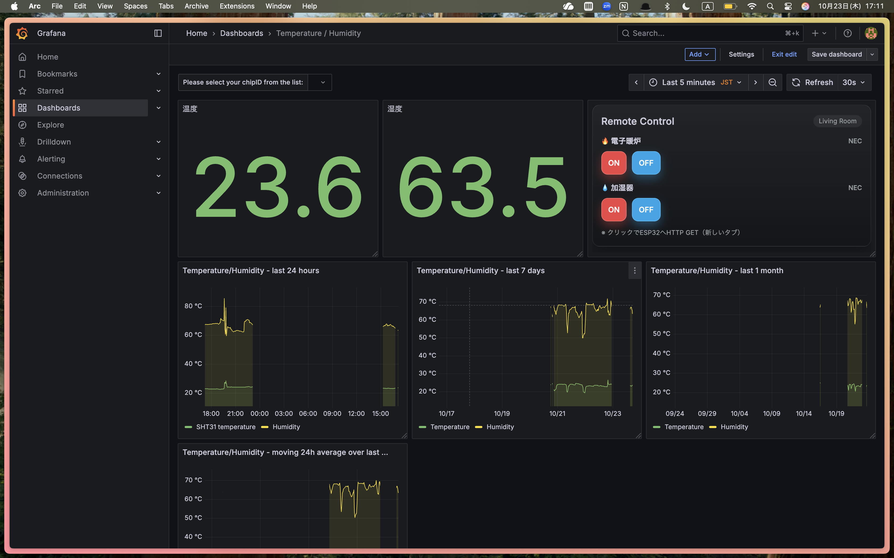
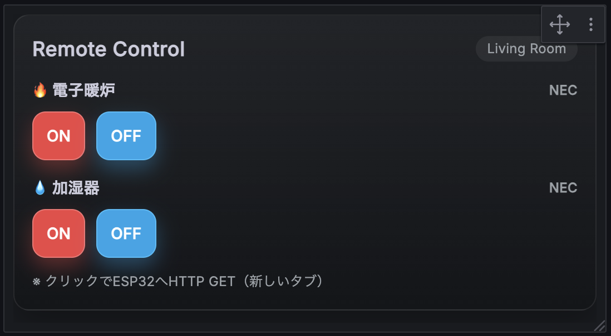
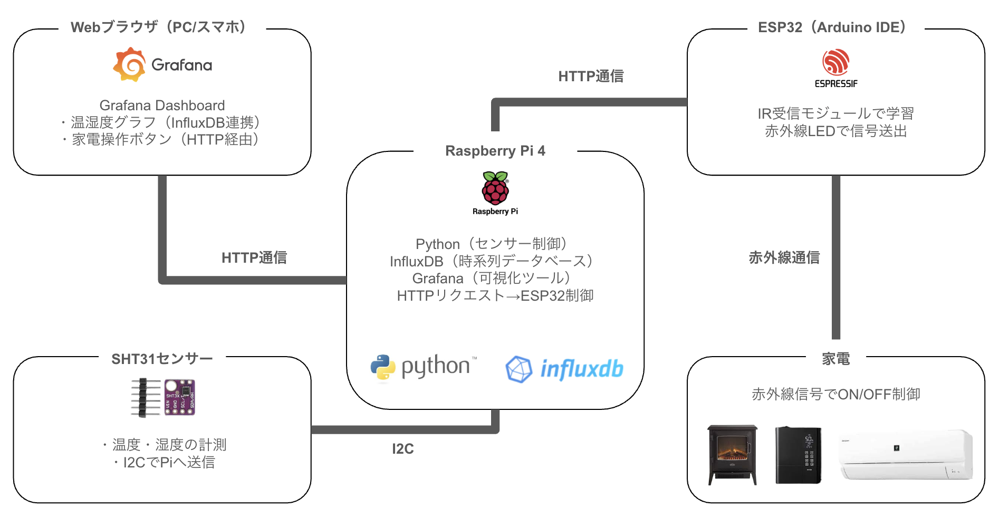

NOT JUST
A HOME.
テクノロジーが、住空間を静かに変える。
テクノロジーが、住空間を静かに変える。
温度と湿度を感じ取り、
家電を自律的に制御する。
それが、私の考えるスマートホーム。
Raspberry Pi と SHT31 センサーが環境を常時モニタリングし、 ESP32 が赤外線で家電を制御。リモコンに触れることなく、 空間が自ら快適な状態へ整う仕組みを設計しました。
SHT31 高精度センサーが室内の温度・湿度をリアルタイムに計測。I2C通信で Raspberry Pi へ常時データを送信し、InfluxDB に蓄積します。

蓄積されたデータを Grafana がリアルタイムにグラフ化。温湿度の推移から操作パネルまで、ひとつのダッシュボードに集約しています。

設定した閾値に基づき、ESP32 が赤外線信号を送信。電子暖炉と加湿器を自動で ON/OFF。人が何もしなくても、空間が自ら整います。

クラウドに依存しないローカル完結設計。プライバシーと高速レスポンスを両立しながら、すべてを自宅ネットワーク内で制御します。
DEMO
MORE DETAILS